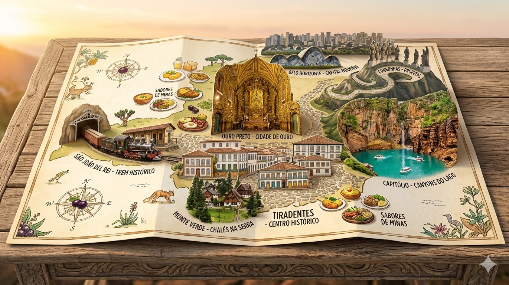

Ouro Preto
Cidade histórica famosa por suas igrejas barrocas, ruas de pedra, museus e grande importância no período do ciclo do ouro.
Conheça Ouro PretoConheça cidades históricas, culturais, gastronômicas e naturais do estado mineiro
Minas Gerais é um estado conhecido por sua riqueza histórica, cultural, gastronômica e natural. Suas cidades encantam turistas com igrejas barrocas, montanhas, cachoeiras, ruas de pedra, culinária típica e tradições preservadas.
Neste site, você conhecerá nove cidades turísticas de Minas Gerais, cada uma com seus principais atrativos, curiosidades e motivos para visitar.

Cidade histórica famosa por suas igrejas barrocas, ruas de pedra, museus e grande importância no período do ciclo do ouro.
Conheça Ouro PretoCidade charmosa e colonial, conhecida pelo centro histórico preservado, gastronomia mineira, pousadas aconchegantes e eventos culturais.
Conheça TiradentesDestino histórico com igrejas antigas, tradições religiosas, museus e o famoso passeio de Maria Fumaça até Tiradentes.
Conheça São João del-ReiUm dos principais destinos naturais de Minas Gerais, conhecido pelos cânions, cachoeiras, trilhas e pelo Lago de Furnas.
Conheça CapitólioCidade histórica marcada pelo ciclo dos diamantes, arquitetura colonial, cultura musical, tradição garimpeira e belezas naturais.
Conheça DiamantinaDestino de montanha muito procurado no inverno, conhecido pelo clima frio, trilhas, pousadas românticas, fondue e chocolate quente.
Conheça Monte VerdeCidade histórica próxima de Belo Horizonte, conhecida por igrejas antigas, casarões coloniais, Museu do Ouro e pela tradicional jabuticaba.
Conheça SabaráCapital de Minas Gerais, conhecida pela Lagoa da Pampulha, Mercado Central, vida cultural, gastronomia e importantes espaços urbanos.
Conheça Belo HorizonteCidade histórica famosa pelo Santuário do Bom Jesus de Matosinhos, pelos Profetas de Aleijadinho e por sua importância no turismo religioso.
Conheça Congonhas| Cidade | Tipo de turismo | Principal destaque |
|---|---|---|
| Ouro Preto | Histórico e cultural | Igrejas barrocas |
| Tiradentes | Histórico e gastronômico | Centro histórico colonial |
| São João del-Rei | Histórico e religioso | Maria Fumaça |
| Capitólio | Natureza e aventura | Cânions de Furnas |
| Diamantina | Histórico e cultural | Centro histórico |
| Monte Verde | Romântico e natureza | Clima frio e montanhas |
| Sabará | Histórico e gastronômico | Jabuticaba |
| Belo Horizonte | Urbano, cultural e gastronômico | Lagoa da Pampulha |
| Congonhas | Histórico e religioso | Profetas de Aleijadinho |
Preencha o formulário abaixo para receber sugestões de destinos turísticos em Minas Gerais.